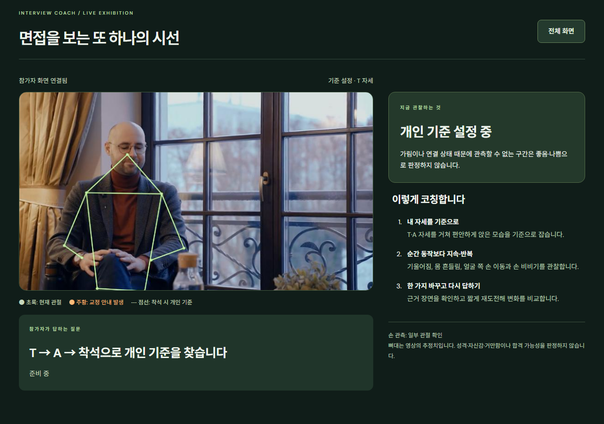

INTERVIEW COACH
01
면접 미리보기
Interview Coach
자세·음성·답변 분석 기반
AI 모의 면접 코칭 시스템
디믹스 작품전 · 프로젝트 소개

실제 영상 기반 관절 추적 화면
개발 배경 및 목적
INTERVIEW COACH
02
혼자 하는 면접 연습의 한계
객관적인 자기 점검과 구체적인 피드백의 필요성
01
비언어적 습관 점검
고개·상체 기울어짐
반복적인 몸·손 움직임
02
답변 전달력 점검
질문과의 관련성
핵심·근거·설명 순서
03
피드백 기반 재연습
개선 항목 선택
재답변 및 변화 비교
개발 목적: 모의 면접부터 분석 결과 확인, 재연습까지의 통합 체험 제공
사용자 체험 과정
INTERVIEW COACH
03
01
면접 준비
채용 공고 선택
촬영·음성 처리 동의
02
자세 보정
T → A → 착석
개인 자세 기준 설정
03
AI 면접
음성 질문 및 답변
실시간 자세 분석
04
결과 및 재도전
분석 결과 확인
핵심 항목 재연습
설계 목표: 1인당 3~5분 내 면접·분석·재도전 체험
T·A 자세 기반 신체 보정
INTERVIEW COACH
04
T 자세 → A 자세 → 착석
T 자세: 전신·팔 관절 확인
A 자세: 연속 추적 확인
착석: 개인 기준 자세 저장
합성 시연 영상 · 동일인 실웹캠 연속 보정 검증 예정
MediaPipe 기반 관절 추적
INTERVIEW COACH
05
신체·손 관절 위치 추정
Pose Landmarker: 신체 관절
Hand Landmarker: 손 관절
관절 좌표의 실시간 시각화
개인 기준 대비 움직임 계산
실제 스톡 영상 분석 · 영상별 착석 기준 적용
자세 분석 기준 및 교정 안내
INTERVIEW COACH
06
01
기준 자세 대비 변화량
머리·어깨·몸통의 상대 위치
어깨 너비 기준 정규화
02
지속 시간 및 반복 횟수
기울어짐·몸 흔들림
얼굴 주변 손 이동·양손 움직임
“고개와 상체를
편안하게 세워보세요.”
관측 조건 충족 시
행동별 실시간 교정 메시지 제공
AI 관절 추정 + 규칙 기반 행동 분석 · 미관측 관절 제외
음성 인식 및 말하기 분석
INTERVIEW COACH
07
음성 입력
마이크 기반 답변 수집
발화·침묵 구간 감지
음성 인식
Whisper 기반 텍스트 변환
발화 구간별 시간 정보 연결
말하기 지표 분석
말속도·긴 멈춤·말버릇
상대 음량 변화
질문 음성 출력: TTS / 사용자 응답: 한국어 음성 답변
사용 모델 기본값: whisper-1 · tts-1
대화 맥락 기반 꼬리질문 생성
INTERVIEW COACH
08
사용자 답변
“검색 조건을 바꿀 때마다
테이블 전체가 다시 렌더링돼서
입력이 끊겼어요.”
AI 꼬리질문
“처음에 화면이 느리다고 느꼈을 때,
혹시 어떤 부분에서
가장 답답함을 느끼셨나요?”
채용 공고 기반 첫 질문 → 이전 답변 기반 후속 질문
합성 개발자 대화 검증 기록 발췌
답변 내용 분석 및 피드백
INTERVIEW COACH
09
핵심 전달
질문에 대한 핵심 답변의 명확성
질문 관련성
질문과 경험·근거의 연결성
내용 반복
동일 내용 및 불필요한 설명의 반복 여부
답변 구성
상황·행동·결과의 논리적 연결
피드백 근거: 사용자 답변 원문 인용 및 보완 방향 제시
구현 현황 및 향후 검증
INTERVIEW COACH
10
모의 면접
맞춤형 피드백
반복 연습
주요 구현 기능
실제 영상의 관절 추적
대화에 따른 꼬리질문
피드백과 재도전 흐름
추가 검증 과제
동일인 T → A → 착석
웹캠·조명·마이크 환경
개인별 오탐과 누락
프로젝트 목표: 자신의 자세와 답변을 점검할 수 있는 AI 면접 연습 환경